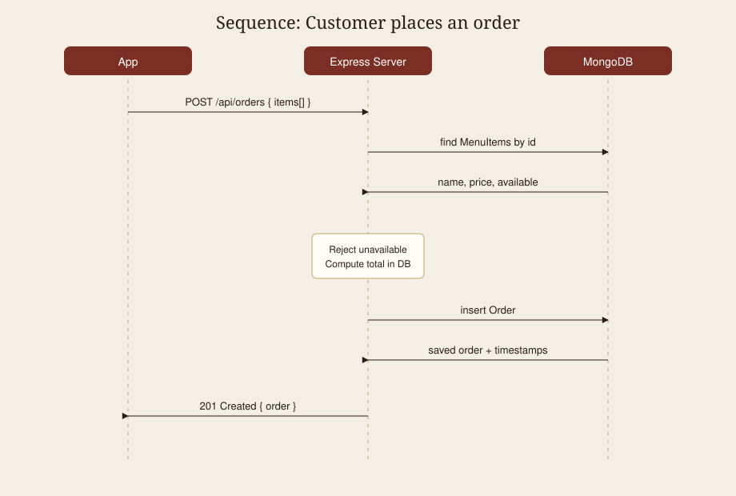

Bistro Nova · Version 2.0 · Revised from A1
This document updates the A1 SRS. The mobile screens, context, reducers, and hooks stay. A Node.js / Express server and a MongoDB database are now in scope so every phone reads and writes the same data.
This SRS describes Bistro Nova, a restaurant mobile application for customers and a floor manager. Version 2 adds a shared backend so menu prices, availability, orders, and reservations are no longer trapped on a single device.
In scope. Role-based login, menu browsing, cart and order placement, order tracking, table reservations, and a manager dashboard for menu, orders, and bookings. The Express API and the MongoDB database named restaurant_app are now in scope. The phone talks to the laptop (or a hosted server) over HTTP. The server is the only place that stores users, menu items, tables, reservations, and orders.
Out of scope. Real card payments, push notifications, kitchen printer integration, multi-restaurant support, and delivery tracking remain out of scope.
Problems found while using the A1 app (mock data only), and how v2 solves them.
PUT /api/menu/:id updates the shared document. The customer list reloads with GET /api/menu.available on the MenuItems collection so every customer sees the same flag.GET /api/orders/my returns the same list for that user on any device after login.GET /api/orders/my every ten seconds. When the manager patches status, the customer screen updates without a restart.| Term | Definition |
|---|---|
| API | Application Programming Interface. The set of HTTP URLs the app calls on the server. |
| REST | Representational State Transfer. Resources such as menu items are read and changed with GET, POST, PUT, PATCH, and DELETE. |
| Endpoint | One method plus path, for example POST /api/auth/login. |
| JSON | JavaScript Object Notation. The request and response body format. |
| MongoDB | A document database. One database holds several collections of JSON-like documents. |
| Collection | A group of documents of the same kind, similar to a table. Example: MenuItems. |
| Mongoose | A Node.js library that defines schemas and talks to MongoDB. |
| Middleware | A function that runs before a route handler. Auth middleware checks the JWT. |
| JWT | JSON Web Token. A signed string that proves the user is logged in. It expires in one day. |
| HTTP Status Code | A number that describes the result: 200 OK, 201 Created, 400 bad data, 401 no token, 403 wrong role, 404 missing, 409 conflict, 500 server error. |
| Seed | A script that empties collections and inserts known starter data. |
| Polling | The app repeating the same GET request on a timer so it can see server-side status changes. |
Section 2 describes the product. Section 3 lists functional requirements. Section 4 lists quality attributes. Section 5 is the database design that replaces the A1 mock data sets. Section 6 covers the screens. Section 7 covers use cases. Section 8 lists the API. Section 9 holds the updated diagrams.
Bistro Nova is a single-restaurant system. The Expo app is a client. The Express process on the laptop (or a later host) is the server. MongoDB is the system of record. Phones do not share files with each other. They share the database through the API.
| User | Access |
|---|---|
| Customer | Public menu, own orders, own reservations, signup and login. |
| Manager | Everything a customer can do on the API that is role-open, plus menu writes, all orders, all reservations, and status changes. |
| Guest (not logged in) | Health check and menu read only. |
localhost, when the app runs in Expo Go.The restaurant has one site. Table bookings are keyed by date and time string (not overlapping duration windows). Both devices sit on the same Wi-Fi during the two-device test.
| ID | Requirement |
|---|---|
| FR-01 | The system shall register a customer with a hashed password and reject a duplicate email with 409. |
| FR-02 | The system shall log a user in and return a JWT plus name, email, and role. The password shall never appear in a response. |
| FR-03 | The system shall restore a session from AsyncStorage on the phone after the app is closed. |
| FR-04 | Anyone may read the menu. Search on name is case-insensitive. Category may be filtered. |
| FR-05 | Only a manager with a valid token may create, update, or delete a menu item. |
| FR-06 | The server shall reject a negative price and an invalid MongoDB id with 400, and a missing item with 404. |
| FR-07 | When an order is placed, the server shall load each dish from the database, refuse unavailable items, and compute the total itself. |
| FR-08 | A customer shall see only their orders. A manager shall see all orders. |
| FR-09 | Order status shall follow Pending → Preparing → Ready → Served. Cancelled is allowed only from Pending. |
| FR-10 | The tracking screen shall poll the customer's orders every 10 seconds and clear the interval on unmount. |
| FR-11 | A reservation shall be refused if the table is missing, the party is larger than the seat count, or the table is already booked at that date and time (409). |
| FR-12 | A manager shall accept or decline a reservation. The customer list shall show the new status after refresh or return to the screen. |
| FR-13 | Unknown routes shall return 404 with the message "Route not found". Uncaught errors shall return JSON with status 500. |
Authorization: Bearer <token>.0.0.0.0 so a phone on the LAN can reach it.BASE_URL lives in one file.The A1 mock files become MongoDB collections in the restaurant_app database. Documents use ObjectId primary keys. Related collections store those ids rather than embedding whole user records on every order.
| Collection | Fields and types | Relationships and rules |
|---|---|---|
| Users |
name: String, required email: String, required, unique, lowercase password: String, required, hashed, never returned role: String enum customer | manager, default customer phone: String timestamps |
Referenced by Orders.user and Reservations.user. Email must be unique. Seed includes one customer and one manager. |
| MenuItems |
name: String, required description: String price: Number, required, min 0 category: String enum Starters | Mains | Desserts | Drinks, required available: Boolean, default true image: String allergens: [String] |
Order line items store MenuItem id plus a snapshot of name and price. Unavailable items cannot be ordered. Seed has at least 15 dishes. |
| Tables |
number: Number, required, unique, min 1 seats: Number, required, min 1 location: String enum Indoor | Window | Patio |
Referenced by Reservations.table. Seed has six tables. Party size cannot exceed seats. |
| Reservations |
user: ObjectId → Users, required table: ObjectId → Tables, required date: String, required (YYYY-MM-DD) time: String, required (HH:MM) partySize: Number, required, min 1 status: Pending | Accepted | Declined | Cancelled notes: String createdAt, updatedAt (timestamps) |
Each reservation belongs to one user and one table. A Pending or Accepted row on the same table, date, and time is a conflict (409). |
| Orders |
user: ObjectId → Users, required items: [{ menuItem: ObjectId → MenuItems, name, price, quantity min 1 }] total: Number, required, min 0, server-computed status: Pending | Preparing | Ready | Served | Cancelled notes: String createdAt, updatedAt (timestamps) |
Each order belongs to one user. Total is not taken from the app. Status only moves forward; Cancelled only from Pending. |
A1 screens remain. Auth stack: Login, Signup. Customer tabs: Menu, Cart, Orders, Book, Profile. Extra stacks: dish detail, order tracking, book a table. Manager tabs: Floor, Menu, Orders, Bookings, Profile, plus the add/edit dish form. The visual language is warm paper and wine red. Screens now load through src/api/client.js and src/hooks/useApi.js instead of mock files.
UC-01 Customer places an order. The customer adds dishes, opens the cart, and taps Place order. The app sends item ids and quantities. The server loads prices, rejects sold-out dishes, stores the order, and returns 201. The tracking screen starts polling.
UC-02 Manager marks a dish unavailable. The manager toggles the switch. The app calls the protected PUT. Any customer who pulls to refresh sees Unavailable and cannot add the dish.
UC-03 Customer books a table. The customer picks a table, date, time, and party size. Client validation runs first. The server checks seats and clashes, then inserts Pending.
UC-04 Manager accepts a booking and advances an order. Accept uses PATCH on the reservation. Ready uses PATCH on the order. The second phone sees both without a reinstall.
| Method | Endpoint | Access | Request body | Response |
|---|---|---|---|---|
| POST | /api/auth/login | Public | email, password | token and user |
| GET | /api/menu | Public | None | List of menu items |
| GET | /api/health | Public | None | { status, time } |
| POST | /api/auth/register | Public | name, email, password, phone | 201 token and user |
| GET | /api/auth/me | Logged in | None | Current user |
| GET | /api/menu/:id | Public | None | One menu item, or 404 |
| POST | /api/menu | Manager | name, price, category, description, available, image | 201 created item |
| PUT | /api/menu/:id | Manager | Any item fields | Updated item |
| DELETE | /api/menu/:id | Manager | None | Delete confirmation |
| GET | /api/tables | Public | None | List of tables |
| POST | /api/orders | Logged in | items[{ menuItem, quantity }], notes | 201 order with server total |
| GET | /api/orders/my | Logged in | None | Caller's orders |
| GET | /api/orders | Manager | None | All orders |
| PATCH | /api/orders/:id/status | Manager | status | Updated order, or 400 if the move is illegal |
| POST | /api/reservations | Logged in | table, date, time, partySize, notes | 201 reservation, or 409 if booked |
| GET | /api/reservations/my | Logged in | None | Caller's reservations |
| GET | /api/reservations | Manager | None | All reservations |
| PATCH | /api/reservations/:id | Manager | status (Accepted, Declined, Cancelled) | Updated reservation |
Query parameters on GET /api/menu: category (exact) and search (case-insensitive name match).
The A1 sequence for “Customer places an order” now has three lifelines: the App, the Express server, and MongoDB.

Figure 1. Place-order sequence across the app, Express, and MongoDB.

Figure 2. Phone, laptop running Express, and the restaurant_app database.